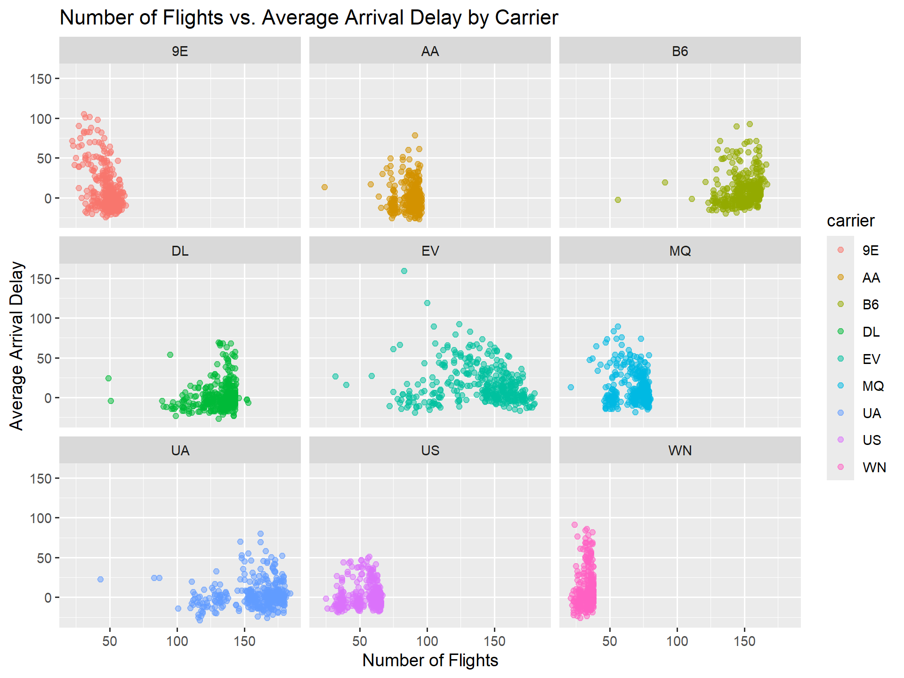
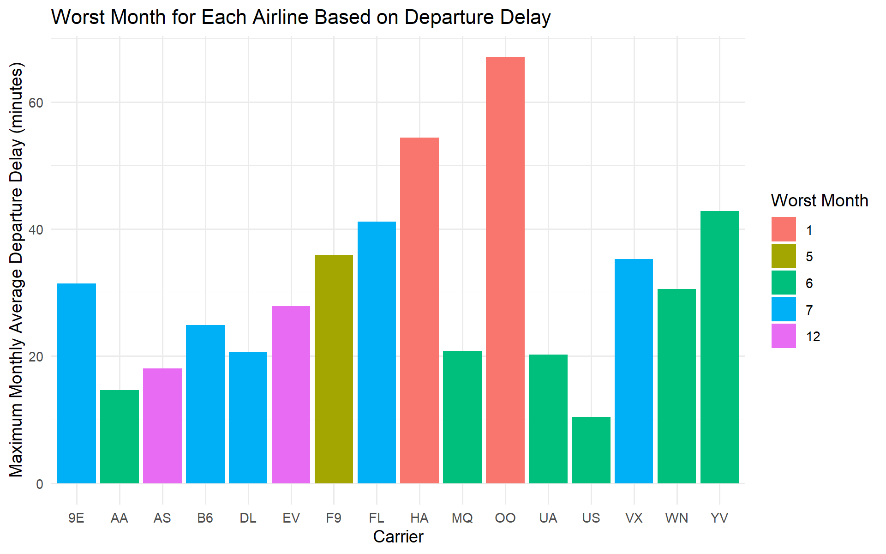
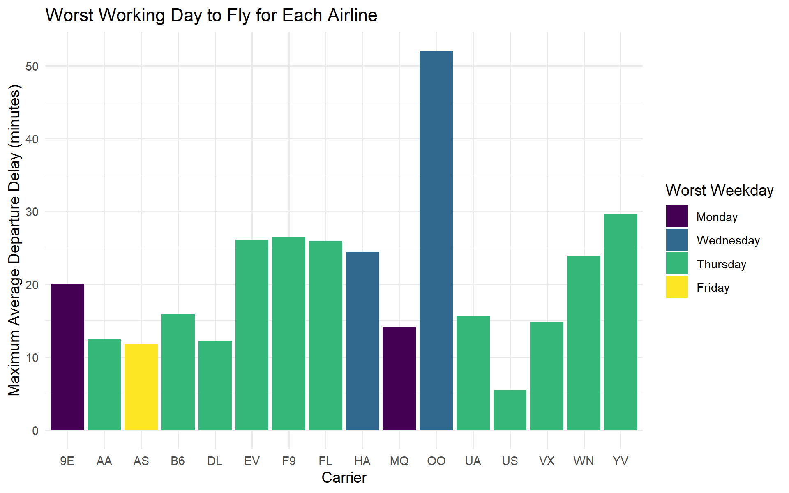

Flights Related Questions
library(tidyverse)
library(nycflights13)Question 1 — Flight Volume and Arrival Delays
Using the flights dataset, investigate whether the
number of flights an airline operates on a given day is related
to its average arrival delay that day. Restrict your analysis
to airline-days with at least 20 flights and exclude
flights with missing arrival-delay information.
Create an appropriate visualization showing this relationship for the different airlines.
flights %>%
# Remove flights with missing arrival delay values
filter(!is.na(arr_delay)) %>%
# Group flights by airline and calendar day
group_by(carrier, month, day) %>%
# Calculate the number of flights and average arrival delay
# for each airline on each day
summarise(
n_flights = n(),
ave_arr_delay = mean(arr_delay),
.groups = "drop"
) %>%
# Keep only airline-days with at least 20 flights
filter(n_flights >= 20) %>%
# Sort from highest to lowest average arrival delay
arrange(desc(ave_arr_delay)) %>%
# Plot number of flights against average arrival delay
ggplot(aes(
x = n_flights,
y = ave_arr_delay,
colour = carrier
)) +
# Add scatter plot points with some transparency
geom_point(alpha = 0.5) +
# Add axis labels and a title
xlab("Number of Flights") +
ylab("Average Arrival Delay") +
ggtitle("Number of Flights vs. Average Arrival Delay by Carrier") +
# Create a separate panel for each airline
facet_wrap(~ carrier)
Question 2 — Worst Month for Each Airline
Using the flights dataset, determine the worst
month for each airline based on departure delays. Define an
airline’s worst month as the month having its highest average
departure delay. Exclude flights with missing departure-delay
information.
Create a bar chart comparing the airlines, where the height of each bar represents the maximum monthly average departure delay and the color identifies the corresponding worst month.
flights %>%
# Remove flights with missing departure delay values
filter(!is.na(dep_delay)) %>%
# Group flights by airline and month
group_by(carrier, month) %>%
# Calculate the average departure delay for each
# airline in each month
summarise(
avg_dep_delay = mean(dep_delay),
.groups = "drop"
) %>%
# Group the monthly averages by airline
group_by(carrier) %>%
# Find the maximum monthly average departure delay
# for each airline
mutate(
max_avg_dep_delay = max(avg_dep_delay)
) %>%
# Keep only the month with the maximum average
# departure delay for each airline
filter(avg_dep_delay == max_avg_dep_delay) %>%
# Remove the grouping
ungroup() %>%
# Create a bar plot of the worst monthly delay
# for each airline
ggplot(aes(
x = carrier,
y = max_avg_dep_delay,
fill = factor(month)
)) +
# Create one bar for each airline
geom_col() +
# Add axis labels, legend title, and plot title
labs(
x = "Carrier",
y = "Maximum Monthly Average Departure Delay (minutes)",
fill = "Worst Month",
title = "Worst Month for Each Airline Based on Departure Delay"
) +
# Apply a minimal theme
theme_minimal()
Question 3 — What Is the Worst Working Day to Fly with Each Airline?
Using the flights dataset, determine the worst
working day of the week to fly with each airline based on departure
delays. Consider only Monday through Friday,
and exclude flights for which departure-delay information is
missing.
Define the worst working day for an airline as the weekday with the highest average departure delay for that airline.
Create a bar chart comparing the airlines, where the height of each bar represents the maximum average departure delay across the five working days, and the color of the bar identifies the corresponding worst weekday.
flights %>%
filter(!is.na(dep_delay)) %>%
# Create date and weekday
mutate(
date = make_date(year, month, day),
weekday = wday(date, label = TRUE, abbr = FALSE)
) %>%
# Keep Monday through Friday
filter(weekday %in% c(
"Monday", "Tuesday", "Wednesday", "Thursday", "Friday"
)) %>%
# Average delay for each airline and weekday
group_by(carrier, weekday) %>%
summarise(
avg_dep_delay = mean(dep_delay),
.groups = "drop"
) %>%
# Maximum weekday average for each airline
group_by(carrier) %>%
mutate(
max_avg_dep_delay = max(avg_dep_delay)
) %>%
# Keep the worst weekday
filter(avg_dep_delay == max_avg_dep_delay) %>%
ungroup() %>%
# Plot
ggplot(aes(
x = carrier,
y = max_avg_dep_delay,
fill = weekday
)) +
geom_col() +
labs(
x = "Carrier",
y = "Maximum Average Departure Delay (minutes)",
fill = "Worst Weekday",
title = "Worst Working Day to Fly for Each Airline"
) +
theme_minimal()